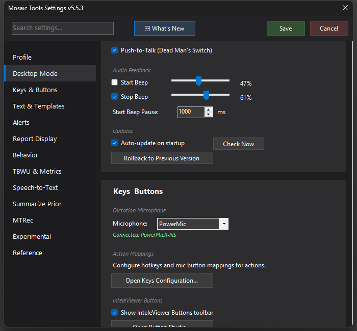

Push-to-Talk (Dead Man's Switch)
Hold the Record button to dictate, release to stop — recording can never be left running by accident.

What it does
By default the Record button is a toggle: press to start, press to stop. Push-to-Talk changes it to a dead man's switch: recording runs only while the button is held and stops the instant you release. Nothing can be left recording between studies, no half-toggled state, and the start/stop rhythm matches how many radiologists already dictate on legacy systems.
How to turn it on / set it up
Settings → Desktop Mode → Push-to-Talk (Dead Man's Switch). It applies to the PowerMic/SpeechMike Record button and works with both Mosaic's built-in dictation and Custom STT Mode.
Using it
Squeeze, speak a finding, release. With Custom STT and Turbo Paste, text lands essentially as you release; the ensemble's slower voters finish their corrections in the moment after. Short bursts per press work well — the ensemble is tuned for exactly that dictation style, and the setup wizard even asks whether you dictate in short bursts.
Tips & gotchas
- MosaicTools uses a desired-state model for the held button, so a fast squeeze-release never wedges the recorder in the wrong state.
- The speech-gating cost saver (which pauses cloud streaming during silence) applies only to hands-free auto-start dictation — under Push-to-Talk the held button itself defines the session, so there's no idle time to save.
- If you prefer hands-free, the opposite workflow exists too: Auto-start on case open in Speech-to-Text settings begins recording when a study opens and stops on Sign Report. Pick one style; they compose poorly.